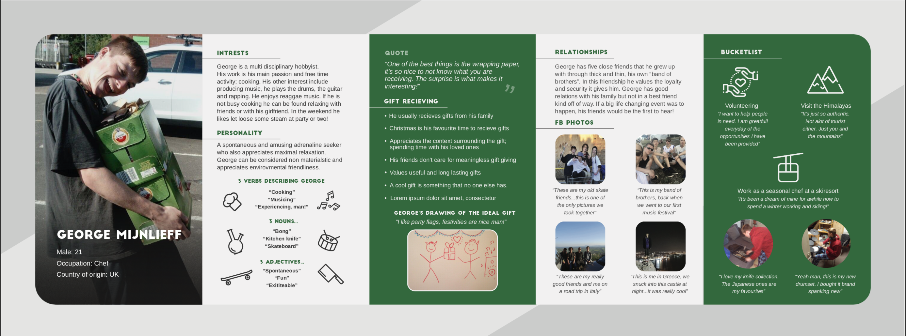

How I made a persona of my best friend:
In this showcase I will show you the steps I took to create this persona.
It revolved around gift giving and my particpant was my best friend George
1. Emphatise
How does the user experience giving and receiving gifts?
This will give me insights in how the user perceives giving and receiving gifts. As a research group we want to know about the giving aspect as we feel we give others similar experiences as we would like to receive ourself.
What kind of relationships does the user value?
This will give us an insight on who is most likely to be the giver of the gift.
What kind of personality does the user have?
This will give us an overview of interests, hobbies, values and attitudes, character-traits, favourite environments, values, ethics, does the user follow traditions?.
What kind of experiences does the user appreciate?
We want to know about the personal interest in past experiences the user has had. We also want to know what experiences are on the bucket list of said user so that we can design a bespoke experience that will match their interests.
2. Research
1. An informal introduction to the interview.
Explain to the participant what the gathered data will be used for and that the recording will serve only as a tool only for you as a researcher to gather data! Have some refreshments and snacks ready to relax the atmosphere of the room.
2. Draw the experience
Ask the participant to draw the best gift experience he/she can imagine in 3 minutes. If a participant is hesitant, explain that it does not have to look perfect
3. Ethnographic Interview
Based on the subtopics in our mind map, we came up with the focus areas in the interview. The example questions serve as guidance for the interviewer to get the data necessary for the design.
4. Favourite Social media pictures
For each picture, we will follow up with the Interviewing technique 5 why’s to gather more information about the context behind the picture.
5. Additions to the experience drawing
Ask the participant if there is Is something he/she would like to add to the drawing?
3. Define
After gathering all the important information through research and observation I was ready to create this final persona of George.